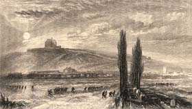

|
|
||||
|
|
Home | Corson Collection | Biography | Works | Image Collection | Recent Publications | Portraits | Correspondence | Forthcoming Events | Links | E-Texts | Contact The Life of Napoleon BuonaparteFirst Edition, First Impression: The Life of Napoleon Buonaparte, Emperor of the French. With a Preliminary View of the French Revolution. By the Author of "Waverley," &c. In Nine Volumes. Vol. I [II-IX]. Edinburgh: Printed by Ballantyne and Co. for Longman, Rees, Orme, Brown, & Green, London; and Cadell & Co., Edinburgh 1827. Composition | Synopsis | Reception | Links Composition
The biography was originally to run to four volumes, but the immense amount of reading that Scott undertook soon led it to stretch far beyond Constable's original conception for the Miscellany. In 1826, though, Constable's business collapsed, and Scott, whose affairs were intrinsically linked with those of his publishers and printers, was left with debts of £121,000 (see Financial hardship). In May of the same year, his wife Charlotte died. Under these immensely trying conditions, which took a heavy toll on Scott's health, he produced a formidable body of work, working at extraordinary speed. During the inevitable intervals in the composition of 'Bony', as he waited for source material to arrive, Scott find time to write Woodstock and to begin work on the Chronicles of the Canongate. To supplement information gleaned from reading and from correspondence with military and political figures, Scott made a research trip to London in October 1826, where the government had granted him free access to archives dealing with Napoleon's exile in St. Helena. Later in the same month he visited Paris to speak with former colleagues of Napoleon, and was lionized by the social and literary world. Among Scott's influential network of correspondents in both the British and French governments was the Duke of Wellington himself who provided a first-hand account of Napoleon's Russian Campaign.
After his return to Scotland, the biography continued to expand to incorporate the mass of detail that Scott had accumulated. By the time it was complete on June 7, 1827, it had stretched to fully nine volumes, containing over a million words. Yet this massive undertaking was, in Lockhart's words, 'the work of one twelvemonth--done in the midst of pain, sorrow, and ruin'. The first volume was finally published in June 1827, jointly by Cadell in Edinburgh and Longman's in London (who in October 1826 had successfully offered 10,500 guineas for the work). SynopsisScott presents a dispassionate, unpartisan view of Napoleon, paying tribute to his military genius and administrative skill and underlining his legacy to France in the form of a national system of education, greatly improved communications, and the Code Napoléon. Refusing to paint him as the bloodthirsty despot presented by many a fellow Tory, Scott notes his mild and humane temperament and genuine love of his country. The seeds of his downfall lie in his progressive self-identification with the French people and in his vision of himself as the man on whom the nation's destiny rested. His life ultimately becomes a tale of hubris, where overweaning ambition and self-blinding egotism lead to defeat in the Russian snows. ReceptionNapoleon was an immediate, worldwide commercial success. Critical response, however, was lukewarm. There was censure of Scott's 'poetic' approach and over-literary language. The Eclectic Review judged Scott's knowledge 'extremely superficial', and the London Weekly Review opined that it would be read with 'pleasure' and 'emotion' but not 'confidence'. For the Monthly Review, it was simply 'A signal and palpable failure'. Despite Scott's fears that his studied impartiality would provoke both admirers and despisers of Napoleon, few reviewers took serious issue with his political thesis. An exception was the young John Stuart Mill in the radical Westminster Review who expressed serious reservations about the opening volume, a preliminary sketch of the French Revolution before the appearance of Napoleon. For Mill, Scott was over-indulgent towards Louis XVI, too dismissive of the Republicans'' attempts to negotiate with the King, and unfair in seeing the roots of the Revolution in the works of the Enlightenment philosophes. Scott reacted to all criticism with his customary equanimity. 'I could have done it better', Lockhart quotes him as saying, 'if I could have written at more leisure, and with a mind more at ease'. Links
Last
updated: 19-Dec-2011 |
|||